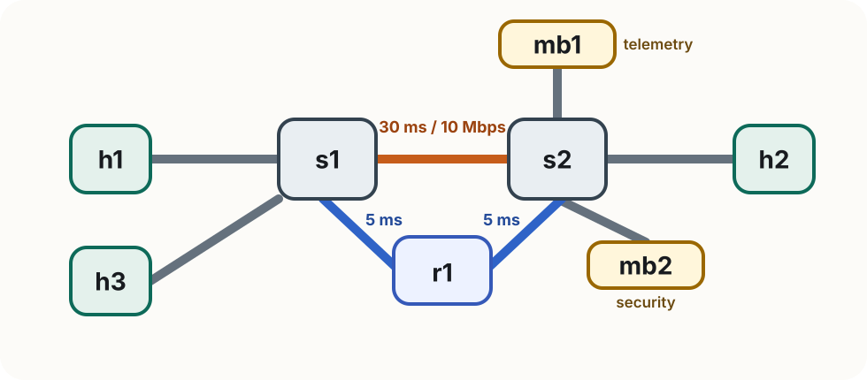

Lab 4
Rogers Executive Workshop 3 — Transport Network
Connecting the ideas from Labs 1 through 3
In this lab you will:
SLICE_REQUEST blockNothing here is a new transport mechanism. Lab 4 puts together the ideas from Labs 1 to 3 behind one higher-level interface: you describe the slice you want, and the transport slice controller realizes it.
Nothing in this lab is conceptually new in the data plane. The transport slice controller is the "putting it together" piece: it takes the mechanisms you already used in Labs 1 to 3 and realizes them together from one higher-level request.
The request is new. The underlying ingredients are the same ones you already used in the earlier labs.
The transport slice controller code is in the _internal directory. If you are curious, check out how it uses the mechanims from Labs 1 through 3. Note that you do not need edit or change it.

h1 source · h2 destination · h3 competing flow · mb1 telemetry · mb2 security · r1 alternate-path router
The directs1→s2path is slower and bandwidth-limited. Ther1path is faster and uncongested, but ONOS does not choose it by default.
mb1 — telemetry monitor
Reports observed throughput of traffic that visits it.
Its log lighting up confirms traffic really took the requested waypoint.
mb2 — security inspector
Inspects the inner flow and reports [OK] or [ALERT].
The middlebox logs are useful to check if traffic is flowing through the chain. If a log lights up, the slice's waypoint requirement is being realized.
The transport slice controller uses the same mechanisms you learned in Labs 1 to 3, but it exposes a higher-level interface. Instead of configuring each mechanism separately, every exercise asks you to edit one SLICE_REQUEST block in a slice_request.py file:
SLICE_REQUEST = {
"name": "express",
"src": "h1",
"dst": "h2",
"latency_objective": "standard", # "standard" | "low"
"bandwidth_mbps": 0, # 0 = best-effort, 1–10 = reserved
"waypoints": ["mb1"], # [] | ["mb1"] | ["mb2"] | ["mb1","mb2"]
}
You are not editing the queueing, ONOS, or SRv6 logic directly. You describe the slice you want in one request, and the controller realizes it using those same underlying mechanisms.
First: clean up Lab 3 completely.
Ctrl+D or exit in the Mininet terminal)sudo mn -c in a terminalThen work from:
cd ~/labs/lab4
Stay in labs/lab4 for every command in this lab.
Make sure ONOS is running. As done previously, open the ONOS CLI from a new terminal using ssh:
ssh -p 8101 -o HostKeyAlgorithms=+ssh-rsa onos@localhost
# password: rocks
From the ONOS CLI, verify the required apps are active:
onos> apps -s -a
You should see these three in the list:
org.onosproject.openflow
org.onosproject.fwd
org.onosproject.proxyarp
Then verify that IPv6 forwarding is enabled in fwd:
onos> cfg get org.onosproject.fwd.ReactiveForwarding
Look for ipv6Forwarding in the output — it should show true. If it does not, the switches will not forward SRv6 packets correctly.
One guided example before the exercises
From ~/labs/lab4:
sudo python3 demo/run.py
The demo uses a fixed request in demo/slice_request.py — you will be asked to open and read it; do not edit it.
The runner walks through four phases and pauses at each one. Follow along in the log files.
If you are familiar with tmux, it can be useful to manage the different terminals; however it is strictly optional.
~/labs/lab4, run:
sudo python3 exercises/partX/run.py # <-- replace X e.g, part1, part2, or part3
exercises/partX/slice_request.py and edit the SLICE_REQUEST blockslice_request.py, then press ENTER in the runnerIf a request is invalid or rejected, the runner prints the error and waits for you to edit and retry.
If the file is not saved yet, many editors show a small white dot in the tab. Save first with Ctrl+S or the runner will reuse the old request.
mininet> exit→sudo mn -c→cd ~/labs/lab4
Goal: ask for a lower-latency service from h1 to h2 while keeping the telemetry monitor in the chain.
The runner shows you contention first, then asks you to edit exercises/part1/slice_request.py.
sudo python3 exercises/part1/run.py
solutions/part1/slice_request.pyWatch these logs:
tail -F /tmp/iperf_h1.log
tail -F /tmp/iperf_h3.log
tail -F /tmp/ping_h1_h2.log
tail -F /tmp/mb1_bandwidth.log
mininet> exit→sudo mn -c→cd ~/labs/lab4
Goal: keep the standard path and best-effort bandwidth, but route traffic through both middleboxes in this order:
telemetry monitor → security inspector → destination
The runner starts traffic first, then asks you to edit exercises/part2/slice_request.py.
sudo python3 exercises/part2/run.py
Watch these logs:
tail -F /tmp/iperf_h1.log
tail -F /tmp/iperf_h3.log
tail -F /tmp/mb1_bandwidth.log
tail -F /tmp/mb2_security.log
mininet> exit→sudo mn -c→cd ~/labs/lab4
The runner installs a fixed 8 Mbps slice for h1, then asks you to submit a competing request for h3. It retries until your request is admitted.
sudo python3 exercises/part3/run.py # edit exercises/part3/slice_request.py when prompted
This controller uses first-come-first-served: the baseline slice keeps its reservation and your request is evaluated only against what remains. That raises a useful question — what if the second request were actually more important? A smarter controller might weigh priority, preemption, or SLA tier.
Further reading: M. Sulaiman et al., Coordinated Slicing and Admission Control using Multi-Agent Deep Reinforcement Learning, IEEE TNSM, 20(2), 2023.
The runner hangs or pingAll fails at startup.
Restart ONOS: sudo docker restart onos. Wait 2–3 minutes, then rerun.
Switches are not forwarding traffic.
Check that ipv6Forwarding is true: cfg get org.onosproject.fwd.ReactiveForwarding
The request file won’t load.
Edit only the SLICE_REQUEST block and keep it a valid Python dictionary.
A middlebox log stays silent.
Confirm that middlebox is listed in waypoints in your request.
The runner fails with RTNETLINK answers: File exists or similar.
A previous Mininet run was not cleaned up. Run sudo mn -c and restart from ~/labs/lab4.
Lab 4 is where Labs 1–3 come together to illustrate the concepts behind simple transport slicing:
A single request expressing a path objective, a service chain, and a bandwidth guarantee and a transport slice controller that realizes it.
Curious to go further? See the optional Further Reading page for recent work on slice monitoring, fine-grained telemetry, and programmable offloading.
Across the workshop, you:
Congratulations on completing Workshop 3: Transport Networks!